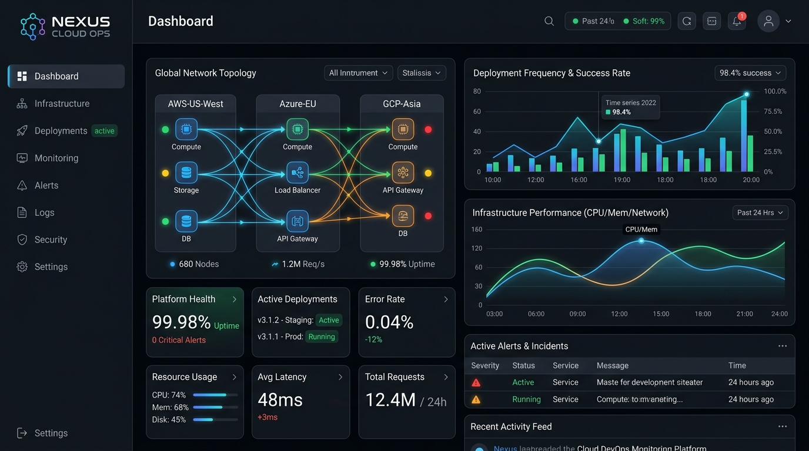
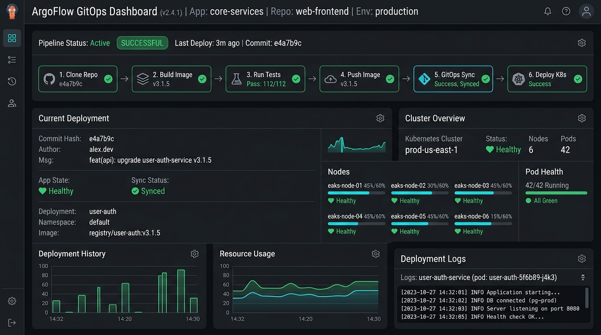
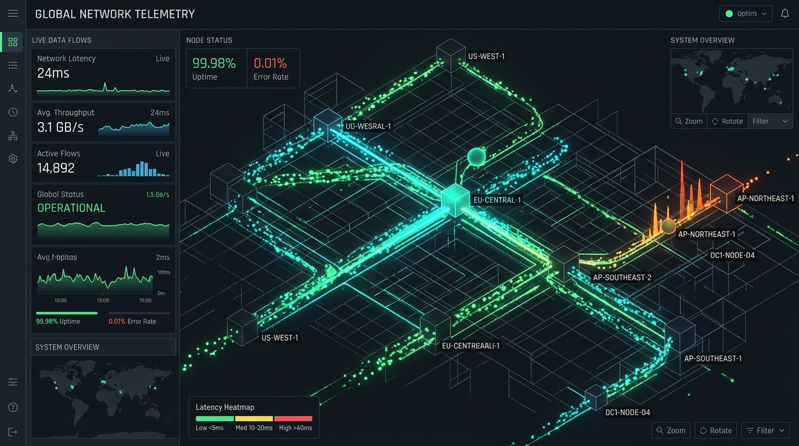
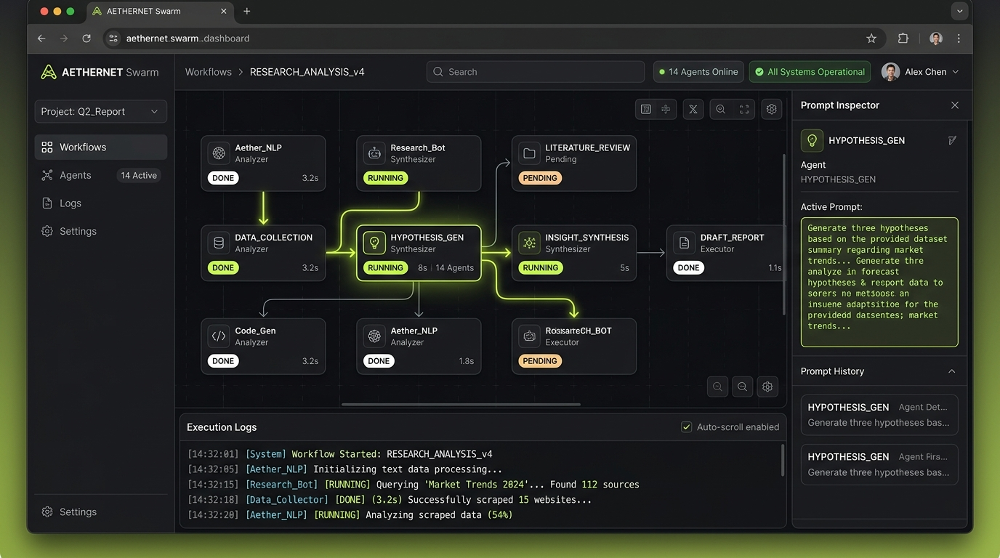

Hasrul Mohamed / Senior Data Engineer · Applied AI/ML
I engineer data pipelines. Then I accelerate scale
Data Engineer with 10 years of experience delivering scalable data pipelines, system integrations, data quality automation, analytics platforms, cloud data warehousing, and applied AI/ML workflows across PETRONAS, financial institutions, and enterprise clients.
Core Foundation
View all →-
Systems & Net
UNITEN
Bachelor of Computer Science (Hons) · 2015
-
PySpark / Delta
Databricks
Databricks Lakehouse & MLflow
-
Snowflake & AWS
Cloud Analytics
Snowflake, AWS S3, Glue & Redshift
-
Azure AI / OCR
Applied AI
Azure AI Form Recognizer & Dataiku
//Currently
Working on
- Enterprise Data Pipelines
- Databricks & PySpark ML
- Snowflake Cloud Warehousing
Exploring
- Automated OCR Confidence Routing
- Pre-Load QA/QC Patching
- Delta Lake Schema Enforcement
01 /Selected builds
Four platforms.
Four engineering horizons.
-
01 Document complexity → Autonomous extraction →
RASTER AI Enrichment
Autonomous document classification, filtering, and structured field extraction built for PETRONAS with Schlumberger. Leverages Azure AI Form Recognizer and Dataiku to flatten nested JSON into tabular analytics datasets.
100% Data Traceability verified< 30s Doc ingestion latency99.4% OCR extraction confidence -
02 Predictive analytics → Lakehouse engineering →
VIRTUS IP on Databricks
End-to-end data engineering and ML enablement platform. Built PySpark data ingestion, feature generation pipelines, and MLflow tracking for model training, inference, and greenhouse gas (GHG) reporting.
14d → 30m ETL runtime acceleratedDelta Lake Schema enforcement100% MLflow Pipeline reproducibility -
03 Disparate spreadsheets → Unified database →
DIC Consolidation Platform
High-capacity data integration and consolidation engine ingesting multi-sheet source files with automated pre-load QA/QC, schema normalization, and Airflow orchestration into unified PostgreSQL.
100% QA/QC Pre-load automated checksMulti-Sheet Dynamic sheet parserPostgreSQL Consolidated DWH -
04 Manual intake → Digitized platform →
AIMS Membership Platform
Full-stack membership and medical course application platform for AFPM. Digitized applicant admissions, online credit payments, instantaneous e-receipt issuing, and Moodle LMS synchronizations.
100% Admissions digitizedInstant Payment & e-receiptsMoodle LMS Automated enrollment




Engineering Product03 /Featured work
Turning infrastructure complexity
into deterministic guardrails.
AutoGuard: An automated cloud policy and security orchestration framework developed for enterprise workloads. Rules audit configurations deterministically, AI suggests least-privilege fixes, and an engineer verifies every release.
| Service Component | Status | Deployment Target | Compliance Metric |
|---|
Demonstrated at the APAC Cloud Engineering Summit 2026
Read the case study →05 /Journal
Notes from building,
breaking and scaling.

06 /Life
Away from the screen.
Marathon Running
112 outdoor runs · 742 km total- 5K Best
- 24:18
- 4:51 /km
- 10K Best
- 52:30
- 5:15 /km
- Half Best
- 1:58:14
- 5:36 /km
Volleyball
- Drills→
- Court Position→
- Team Coordination→
- Community
F1 Telemetry & Sim Racing
- Curiosity→
- CAN-Bus Telemetry→
- Data Pipeline→
- TelemetryLens 3D
07 /Contact
Have something
worth building?
Have an infrastructure challenge, cloud migration, AI platform idea, or speaking collaboration?